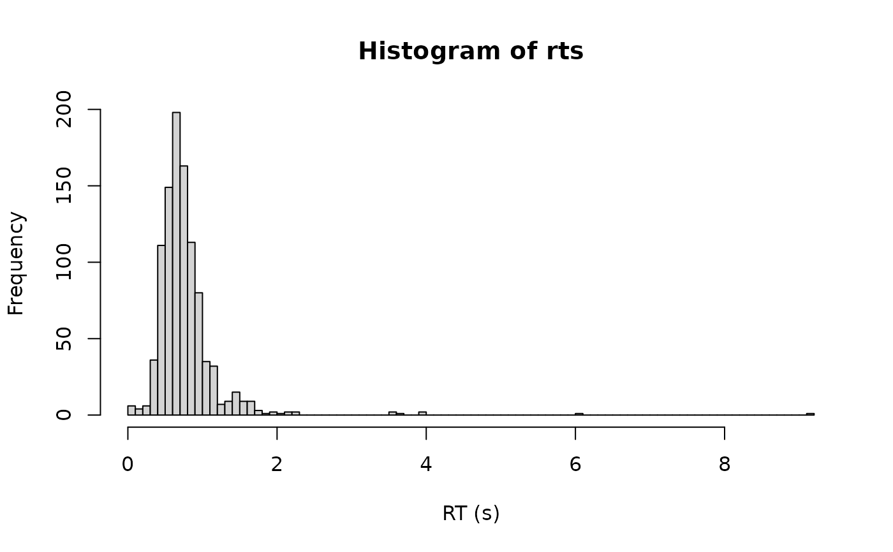

Density, random generation, and brms custom family for the shifted
Log-Student-t distribution - a robust LogNormal. A Log-Student-t
distributed decision time is shifted by a non-decision time ndt, and a
fixed proportion poutlier of responses is generated by an outlier process
instead of by the decision process.
Functions:
rcogmod_logstudent(): Simulates random draws.dcogmod_logstudent(): Computes the density (likelihood).pcogmod_logstudent(): Computes the cumulative distribution function (CDF) or survival.cogmod_logstudent(): Creates abrms::custom_family().cogmod_logstudent_stanvars(): Generates thestanvarsto pass tobrm().
Usage
rcogmod_logstudent(n, mu = -0.7, sigma = 0.4, dof = 5, ndt = 0.2, poutlier = 0)
dcogmod_logstudent(
x,
mu = -0.7,
sigma = 0.4,
dof = 5,
ndt = 0.2,
poutlier = 0,
log = FALSE
)
pcogmod_logstudent(
q,
mu = -0.7,
sigma = 0.4,
dof = 5,
ndt = 0.2,
poutlier = 0,
lower.tail = TRUE,
log.p = FALSE
)
cogmod_logstudent(
link_mu = "identity",
link_sigma = "softplus",
link_dof = "log",
link_ndt = "log",
link_poutlier = "logit",
predict_outliers = FALSE
)
cogmod_logstudent_lpdf_expose()
cogmod_logstudent_stanvars()
log_lik_cogmod_logstudent(i, prep)
posterior_predict_cogmod_logstudent(i, prep, predict_outliers = NULL, ...)
posterior_epred_cogmod_logstudent(prep, predict_outliers = NULL)Arguments
- n
Number of observations. If
length(n) > 1, the length is taken to be the number required.- mu
Location of the Student-t on the log scale. Any real value.
- sigma
Scale of the Student-t on the log scale. Must be positive.
- dof
Degrees of freedom of the Student-t on the log scale. Must be positive. Smaller is heavier-tailed;
dof -> Infiscogmod_lognormal().- ndt
Non-decision time (shift parameter), in seconds. Must be non-negative. Represents time for processes such as stimulus encoding and response execution. Range: [0, Inf).
- poutlier
Proportion of responses generated by the outlier process rather than by the decision process. Range:
[0, 1]. Atpoutlier = 0the distribution reduces to the plain shifted LogNormal.- x
Vector of quantiles (observed reaction times).
- log
Logical; if TRUE, probabilities p are given as log(p).
- q
Vector of quantiles (reaction times, in seconds).
- lower.tail
Logical; if TRUE (default), probabilities are
P[X <= q], otherwiseP[X > q]- the survival, which is what a right-censored response contributes to the likelihood (see the Censoring section).- log.p
Logical; if TRUE, probabilities p are given as log(p).
- link_mu, link_sigma, link_dof, link_ndt, link_poutlier
Link functions for the parameters.
- predict_outliers
Logical; whether
posterior_predict()andposterior_epred()should include the outlier component.FALSE(the default) fixespoutlierto zero for prediction, so predictions describe the decision process alone; the likelihood is always the full mixture either way. Seewith_outliers().- i, prep
For brms' functions to run: index of the observation and a
brmspreparation object.- ...
Additional arguments.
Value
rcogmod_logstudent() returns a numeric vector of n simulated
reaction times, in seconds. dcogmod_logstudent() returns the density at
each element of x - the log density if log = TRUE - recycled to the
length of the longest argument. cogmod_logstudent() returns a
brms::custom_family object, to put on a brms::bf() formula.
cogmod_logstudent_stanvars() returns a brms::stanvars object holding
the family's Stan functions block, to pass to brms::brm(), and
cogmod_logstudent_lpdf_expose() compiles that Stan code and returns it
as an R function, for checking the density outside of a model. The
remaining functions are brms post-processing methods, called by brms
rather than directly: log_lik_cogmod_logstudent() returns a numeric
vector holding one log-likelihood value per posterior draw for
observation i, and posterior_predict_cogmod_logstudent() a draws x 1
matrix of reaction times simulated for observation i.
posterior_epred_cogmod_logstudent() returns nothing: the decision time
has no finite mean, so it errors rather than report one - summarise
posterior_predict() draws instead.
Details
log(RT - ndt) follows a Student-t distribution with location mu,
scale sigma and dof degrees of freedom. As dof grows the Student-t
becomes the Normal, so cogmod_lognormal() is the dof -> Inf limit: this
family varies kurtosis where cogmod_loggamma() varies skew.
dof is what brms::student() calls nu. It is renamed here because
cogmod_lnr() already spends nuzero and nuone on drift rates, and
because brms recognises the name nu and supplies opinionated defaults for
it; dof arrives flat like every other parameter this package defines, so
cogmod_priors() simply fills it.
ndt and poutlier mean exactly what they do in cogmod_lognormal(),
and with_outliers(), without_outliers(), p_outlier() and
cogmod_priors() all work here too. See ?rcogmod_lognormal for why ndt is
expressed directly in seconds rather than as a fraction of the fastest
observed response, what the outlier component is for, and why its scale is a
constant rather than a dpar.
What the heavy tail is for
The outlier component behind poutlier is a half Normal, which by
construction cannot explain a slow response: its density at 5 s is
effectively zero, so a long right tail is the decision family's own business.
cogmod_loggamma()'s shape and cogmod_invgaussian()'s sigmadrift are
two ways of providing one. dof is a third, and the most direct: it absorbs
slow contaminants into the likelihood rather than into a mixture component.
At dof = 5 the probability of a decision time beyond 5 s is about five
orders of magnitude larger than the matching LogNormal's.
Two things to know before using it
The mean does not exist, for any finite dof. E[exp(sigma * T)] with
T a Student-t diverges because the t has polynomial tails and exp()
outruns them - there is no region of the parameter space where this family
has an expectation, unlike cogmod_logweibull(), whose mean exists below
sigma = 1. posterior_epred() therefore errors rather than returning a
number. The median is exact: ndt + exp(mu). For anything else,
summarise posterior_predict() draws.
The density is unbounded at ndt. As RT approaches ndt from above
the decision density grows like 1 / (t * |log t|^(dof + 1)), where a
LogNormal decays to zero. The spike is integrable for every dof > 0, so
the posterior stays proper, but the likelihood has no maximum and the prior
on ndt is what keeps the sampler off min(RT). This is the same situation
as cogmod_loggamma() above sigma * shape = 1, and the reason
cogmod_priors() is not optional here.
A Student-t is symmetric on the log scale, so a small dof fattens both
tails rather than only the slow one. At dof = 2 some 1.5% of the decision
distribution falls below 0.05 s, against a LogNormal's 5e-9 - territory
poutlier also claims, so the two trade off. cogmod_priors() centres dof
at 6 with 95% of its mass between 1.5 and 24, which keeps the fast-side spike
under a tenth of a percent while leaving the slow tail worth having.
References
Lange, K. L., Little, R. J. A., & Taylor, J. M. G. (1989). Robust statistical modeling using the t distribution. Journal of the American Statistical Association, 84(408), 881-896. doi:10.2307/2290063
Examples
rts <- rcogmod_logstudent(1000, mu = -0.7, sigma = 0.4, dof = 5,
ndt = 0.2, poutlier = 0.02)
hist(rts, breaks = 100, xlab = "RT (s)")

# A heavier tail than the LogNormal it nests, on the slow side...
dcogmod_logstudent(5, dof = 5, ndt = 0.2)
#> [1] 0.0004813849
dcogmod_lognormal(5, ndt = 0.2)
#> [1] 5.628635e-06
# ...and on the fast side too, which is what `poutlier` also covers.
dcogmod_logstudent(0.21, dof = 5, ndt = 0.2)
#> [1] 0.01175141
dcogmod_lognormal(0.21, ndt = 0.2)
#> [1] 4.525335e-12